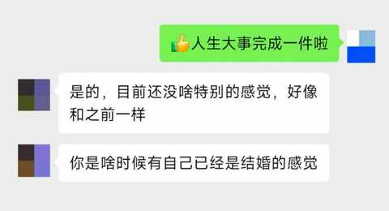
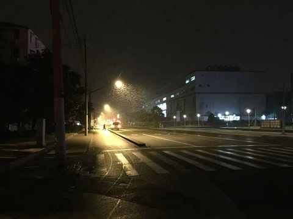

哪个瞬间让你猛然意识到：自己真的结婚了？
一、结婚十年
昨天是9月28日，10年前这个时候一大早就去到县城办理结婚手续，下午3点50 左右和老婆一起领到了盖上钢印的结婚证。

当天我发了三条朋友圈，一条点赞都比一条多，第三条也就是晒结婚证的那条点赞最多，代表着人们对两位新人朴素的祝愿：祝他们新婚快乐，白头偕老！
结婚十年，作为钛合金直男，在这十年里并没有印象深刻的某个瞬间让自己猛然意识到自己真的结婚了。
聊感觉对于我这种神经大条，反射弧巨长的直男来说太难太难，今天是第二个10 年的开端，相信我会有更多的感受和体会。
二、你是啥时候有自己已经是结婚的感觉
1️⃣ 一个真诚的问题
昨天中午吃饭的时候刷朋友圈看到两位爱情长跑8年的朋友终于领证，当即就给这条朋友圈点了一个大大的赞，恰如十年前其他朋友点赞我的朋友圈一样，这个点赞代表着对两位新人朴素的祝福。
到了晚上的时候，特地和男同胞微信沟通了一下，顺带着也再次表达下祝福。
然后他问我的一个问题，差点把我这个已婚已育孩子已经八岁多的中年男人问懵了， 他问我：“ 你是啥时候有自己已经是结婚的感觉？ ”。

这是一个真诚的问题，粗开是一个问题，其实是三个：
1） Who：我，一个 已婚已育孩子已经八岁多的中年男人
2） What：什么是结婚的感觉
3） When：什么时候有结婚的感觉
当时并没有想到这一层，而是打趣的回复说是下次吵架的时候，早上送娃上学回来的路上突然想到，肯定不是吵架的时候。
吵架的时候更多的是去区分你我，争论对错，肯定不会在吵架的时候在如此情绪上头的时间里有结婚的感觉。
感觉可太微妙了，很难具体而又细致的描述出来，但是我老婆可以。
2️⃣ 老婆经历的一个瞬间
在问了她这个问题之后，她当即就给到了答案，毫不夸张的说，比当下所有的 Ai 工具输出的都快、细节且精准。
她说是第一次去我家过年的时候，那是 2016 年的 2 月 7 日是大年三十，我们 2 月 6 日一大早才坐高铁回去。

虽然我们两个都是安徽人，但两个地方的距离有 400km，我家在皖南，她家在皖北，所以大年三十当天的正餐不一样，她们家中午是正餐，我们家晚上是。
在当天中午的时候，她便泛起浓浓的乡愁，一股思乡的情绪势不可挡的涌上心头，会情不自禁的想着 400km外家人们现在正齐聚一堂的吃着饭聊着天。
而中午在我们大别山区是随便凑合吃点，只待下午一起开始备菜烧饭，等到 6 点钟左右所有家庭人员到齐之后就开始一起吃年夜饭。
两地的民俗差异再叠加着周边家庭成员的不熟悉，瞬间让她有了结婚的感觉，这个感受之深刻让她在 2025 年的 9 月 29 日依然能精准地表达出来。
3️⃣ 直男的感受虽迟但到
作为对感觉很不敏感的直男来说，讲对一些具体事情的感受更容易一点，也能表达的精准一些。
是小日子有奔头的时候，是生活产生变化的时候，是两个人有一个个明确共同目标的时候，是一件件具体的事情，当有一天蓦然回首，突然就 串了起来：买房、买车、怀孕、生子、搬家……
三、回到问题本身
在写这篇文章的当下，我努力调动自己的思绪与感官后，我想这样回答：
不细致、不精准但保证真实！
回首十年前自己和老婆领证的时候，一个个有仪式感的流程有序进行着，兴奋是难免的，不开心是不可能的。
可能当下的他和当时的我在结婚后的一段时间都处于一个兴奋期，可能会想：结婚这么大的事情我怎么没啥特别的感觉。
这是正常的， 在 生活的中大部分时候我们就是在一天天的重复，关键是和谁在一起，又在一起做些什么事情。
再次给两位新人送上我 朴素的祝愿：祝新婚快乐，白头偕老！